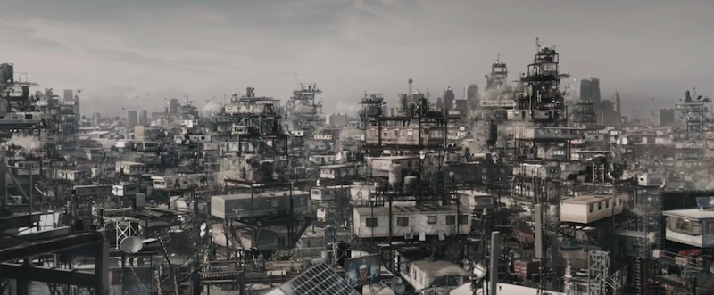

Columbus, Ohio 2045
In 2045, Columbus, Ohio has transformed into a dystopian urban landscape, ravaged by the effects of climate change and economic collapse. The city is characterized by overcrowding, poverty, and a stark divide between the wealthy elite and the struggling masses. At the heart of this bleak future are "The Stacks," towering vertical trailer parks that have become the primary housing solution for the city's impoverished residents. These structures consist of mobile homes and shipping containers stacked atop one another, held together by a framework of metal scaffolding. The Stacks stretch skyward, creating a chaotic and claustrophobic environment where people live in cramped, makeshift dwellings with little privacy or safety. Despite the harsh living conditions, The Stacks have fostered a sense of community amongst the residents, who rely on each other for support in this challenging world. The stark contrast between the harsh reality of Columbus and the limitless possibilities of the OASIS virtual world serves as a powerful backdrop for the story of Ready Player One, highlighting the escapism and hope that virtual reality offers to those trapped in a decaying physical world.